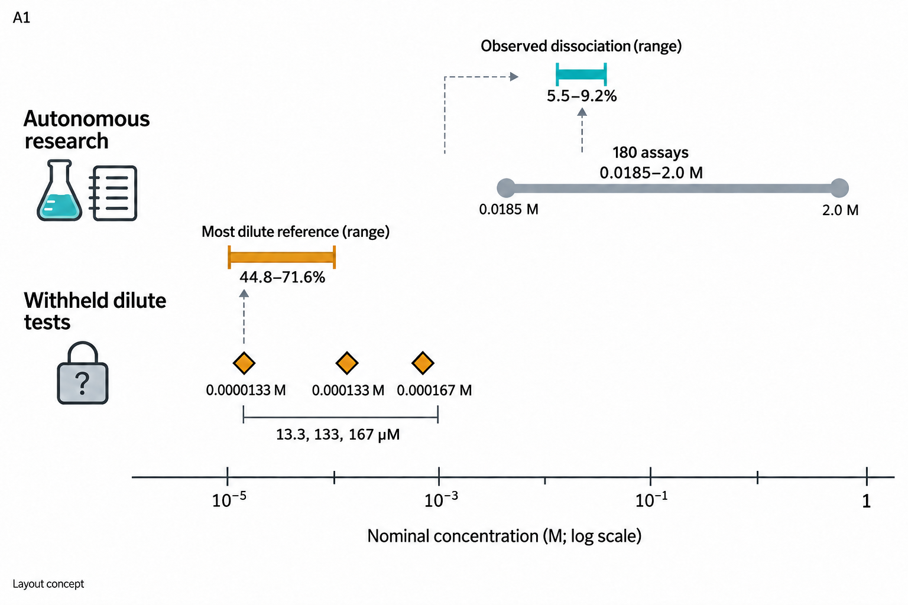
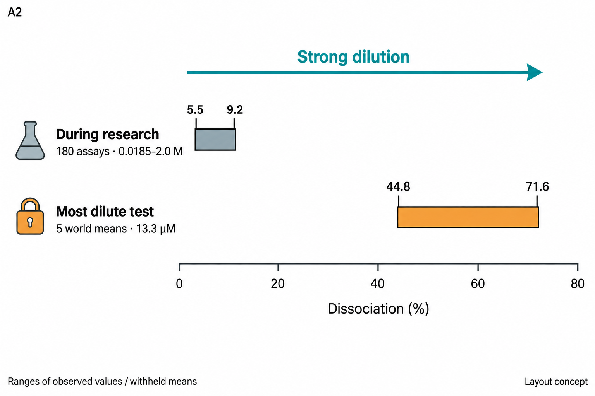
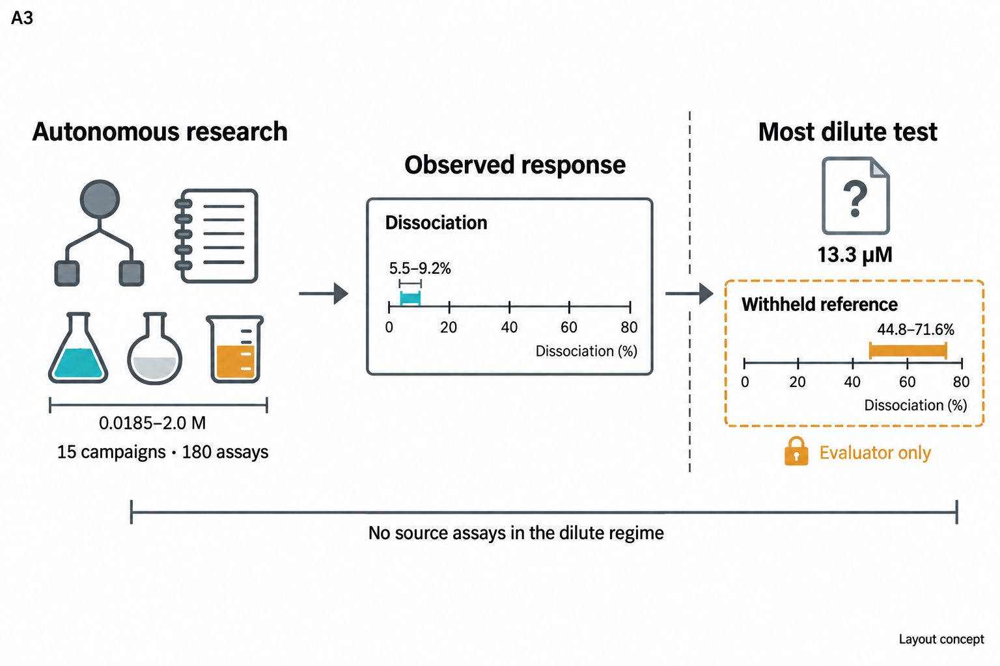
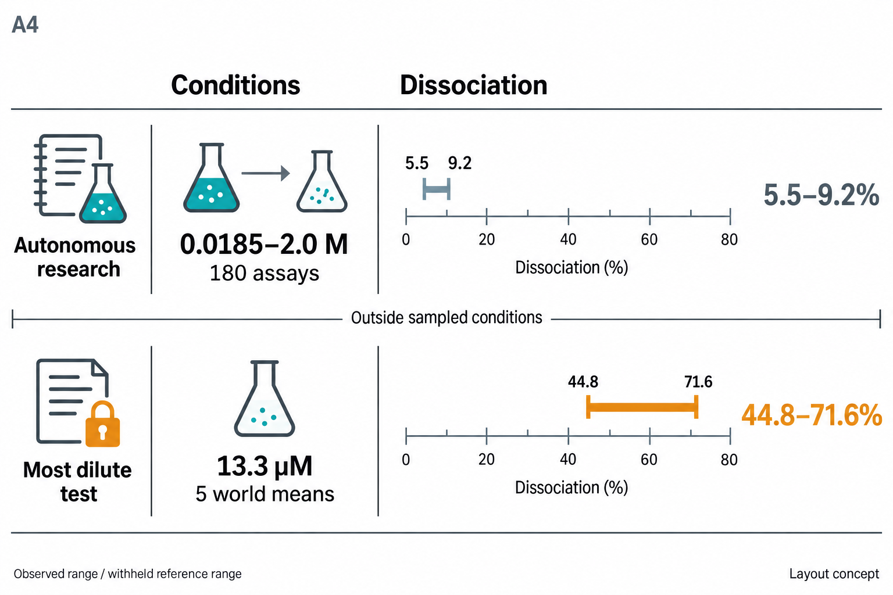
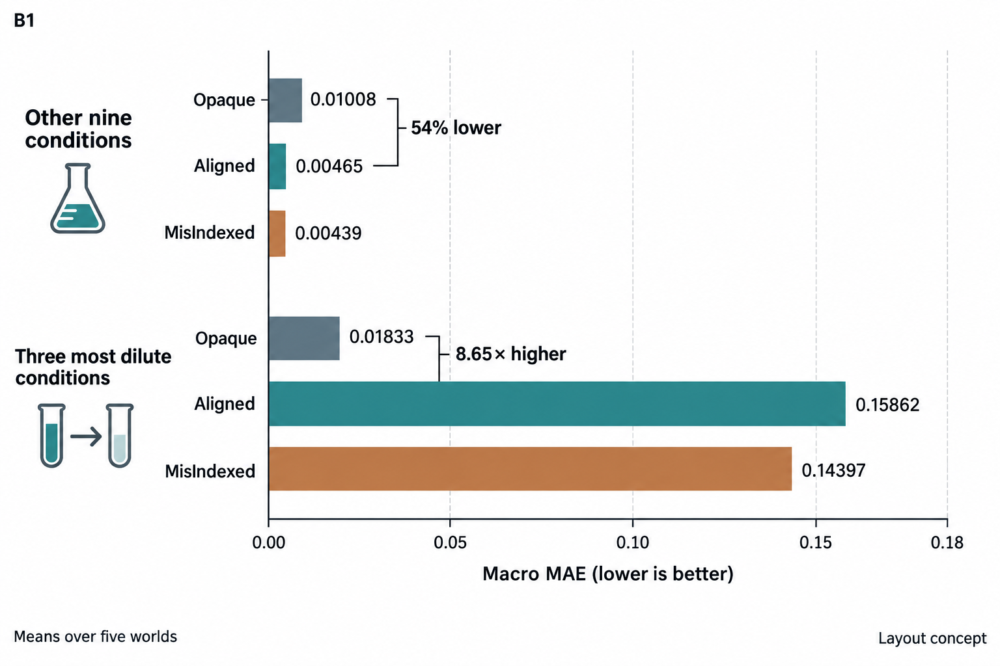
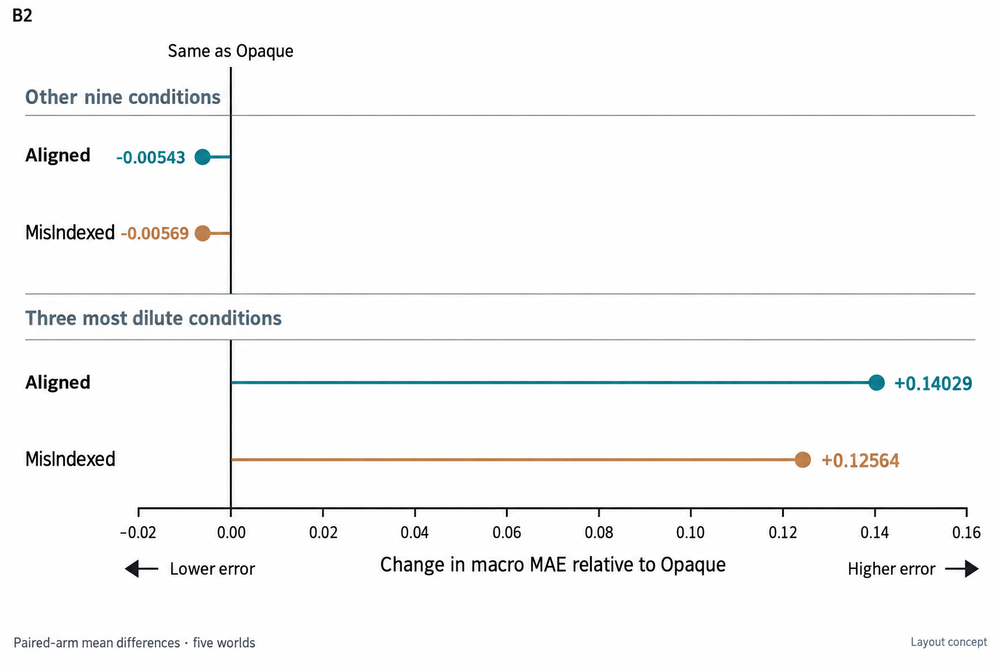
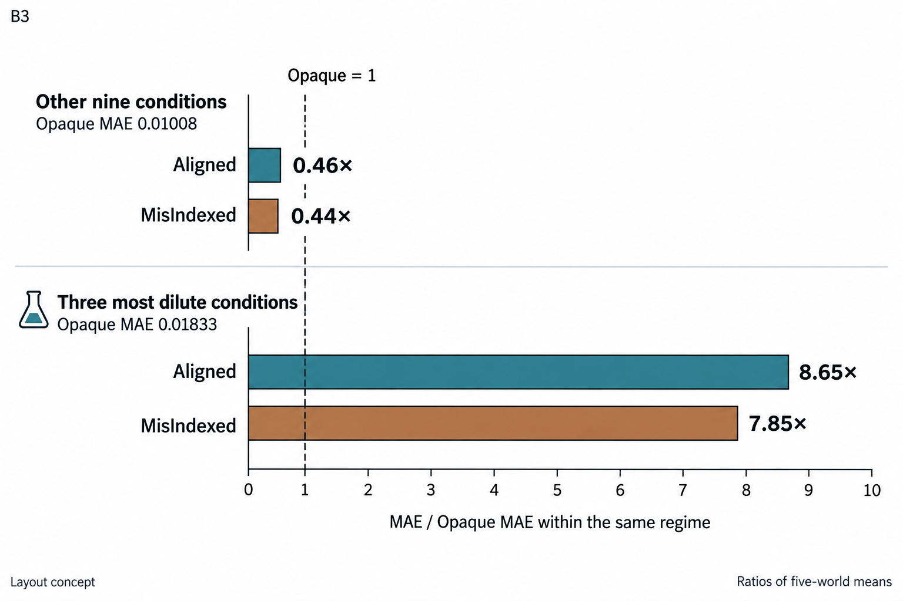
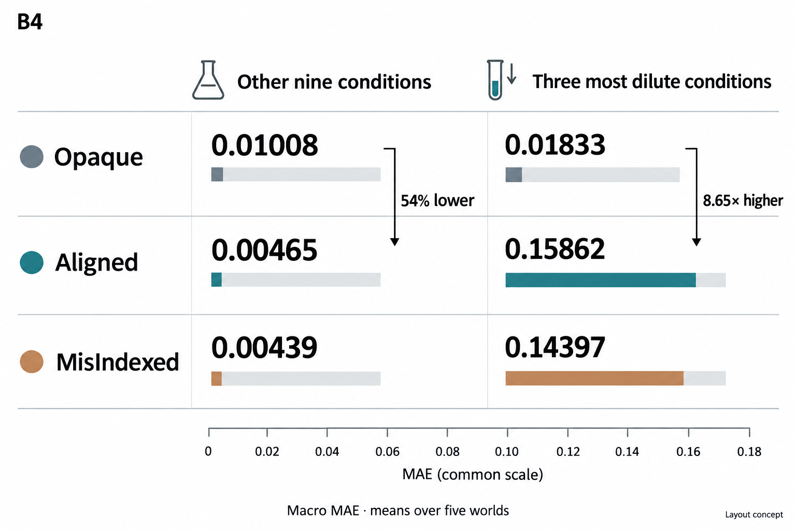

A1 · 覆盖地图
把自主实验覆盖的浓度范围与三个稀释测试条件放在同一条浓度轴上。

打开原尺寸图 ↗a、b 各四种独立方案，可以自由组合。点击任意图片查看原尺寸。
这些是内置 Imagegen 生成的排版与图标概念，数字锚点来自保留结果。坐标位置、条长及间距仅用于方案选择；正式图将按原始数据精确重建。当前稿件中的 Figure 5 未被替换。
把自主实验覆盖的浓度范围与三个稀释测试条件放在同一条浓度轴上。

打开原尺寸图 ↗用同一响应坐标展示已观察范围与最稀条件参考范围的差距。

打开原尺寸图 ↗强调自主实验如何形成证据，以及评估者保留的新条件结果。

打开原尺寸图 ↗把浓度条件与响应范围逐行对应，兼顾信息完整性和结构清晰。

打开原尺寸图 ↗共用线性坐标，保留三种信息臂在两组条件下的原始误差。

打开原尺寸图 ↗以零线明确区分降低误差和增加误差，并显示绝对变化幅度。

打开原尺寸图 ↗以 Opaque = 1 展示先验由降低误差转为放大误差的变化。

打开原尺寸图 ↗用两列三行对齐全部数值，以紧凑表格突出同条件下的比较。

打开原尺寸图 ↗